GenAI: Tecnologie ed Esempi di Utilizzo Per La Didattica – In relazione alle linee guida di ateneo
Giovanni Ciatto & Giovanni Antonioni
Dipartimento di Informatica — Scienza e Ingegneria (DISI), Sede di Cesena,
Alma Mater Studiorum—Università di Bologna
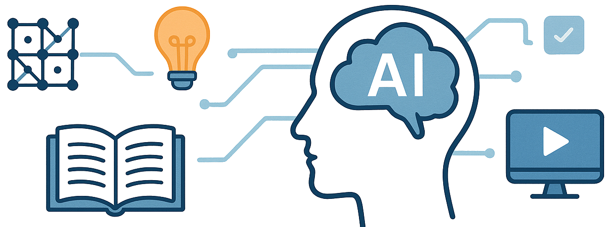
(versione presentazione: 2026-03-11)
Link a queste slide
Scaletta
GenAI: Intelligenza Artificiale Generativa
Algoritmi di IA in grado di generare automaticamente contenuti, e.g.:
- testo
- immagini
- audio e/o video
- codice [di programmazione]
- …
GenAI mediante Modelli Fondazionali (FM)
- Grosse reti neurali che imparano ad elaborare, “capire”, e produrre dati non [necessariamente] strutturati
- allenati su grandi quantità di dati, e con grandi risorse computazionali, a fare un po’ tutto
- con l’idea di poterli poi specializzare per compiti specifici

Terminologia: Modelli Fondazionali vs. Large Language Models
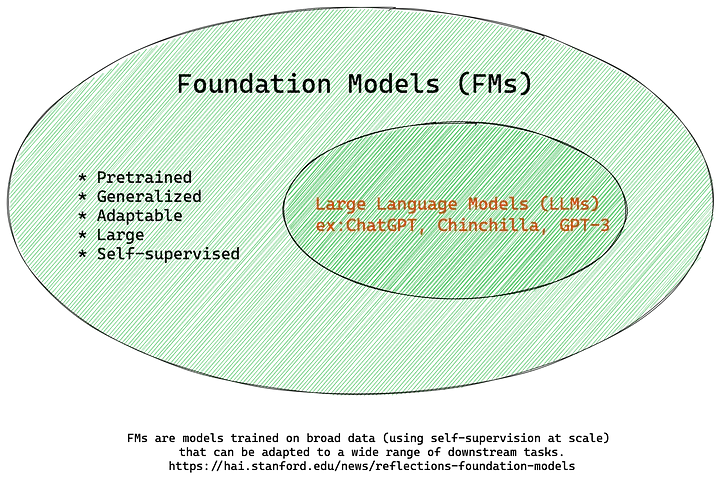
GenAI con modello di consumo as-a-Service
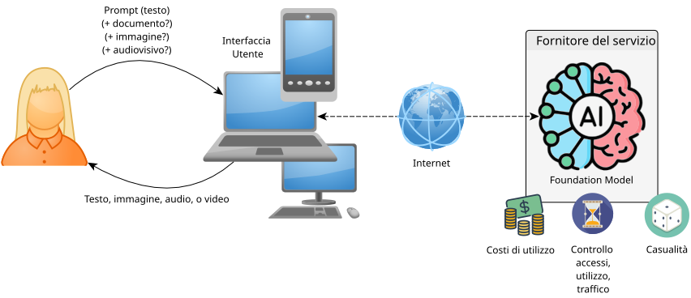
GenAI con modello di consumo as-a-Service
-
Modelli di costo:
- ad abbonamento: si paga un canone fisso mensile/annuale per avere accesso al servizio
- spesso contiene comunque limiti di consumo
- a consumo: si paga in proporzione all’uso effettivo del servizio
- ad abbonamento: si paga un canone fisso mensile/annuale per avere accesso al servizio
-
Consumo è misurato in base allo sforzo computazionale necessario per servire la richiesta:
- token processati (per testo)
- quantità di richieste effettuate per unità di tempo (minto, ore, giorno, mese)
- dimensione dei dati processati (per immagini, audio, video)
- complessità dello specifico modello impiegato per per servire la richiesta
-
La generazione da considerarsi un processo stocastico, per costruzione
- La qualità del servizio è soggetta a casualità e a fluttuazioni dovute a:
- carico del servizio
- scelta del modello, e relativo aggiornamento
- limiti di servizio eventualumente raggiunti nel quanto di tempo corrente
- caso
Ciclo di apprendimento di GenAI

Ciclo di apprendimento di GenAI — Conseguenze (pt. 1)
-
Bias di campionamento: GenAI conosce solo ciò su cui è stato allenato + pia speranza che impari a generalizzare
-
L’apprendimento usa dati presi dal Web + eventuali dati aziendali del fornitore del servizio
- comprovato impiego delle interazioni degli utenti precedenti come feedback per allenamenti successivi
- Informazioni di nicchia possono non essere apprese correttamente (o affatto)
- Fondamentale evitare di convididere informazioni sensibili, confidenziali, o protette da diritti d’autore
Ciclo di apprendimento di GenAI — Conseguenze (pt. 2)
-
Cicli di apprendimento estramente costosi in termini di denaro e risorse computazionali…
-
… eseguiti periodicamente (settimane? mesi?) per migliorare la qualità del servizio
- il modello di consumo as-a-Service permette all’utente di avere accesso traspente al servizio aggiornato
- Informazioni recenti potrebbero non essere state (ancora) apprese
- Rischio di ricevere risposte datate o manchevoli da GenAI
- GenAI dà l’impressione di star imparando durante la conversazione, ma in realtà lo fa offline
Principali soluzioni tecnologiche
Categorizzate per tipo di interfaccia
- Conversazionali: e.g. ChatGPT, Claude, Scite
- Auto-completamento: e.g. GitHub Copilot
- Programmatiche: e.g. OpenAI Platform, Hugging Face
- In-App: e.g. Microsoft 365 Copilot
- Editing di audio-visivi: e.g. Suno, Runway
Lista non esaustiva!
Interfaccia conversazionale
- Interazione testuale che mima una corrispondenza (chat)
- l’utente chiede, l’IA risponde reattivamente
- L’interfaccia permette l’inserimento di un prompt
- opzionalmente contenente allegati (e.g. immagini, documenti)
- Le risposte sono contestuali
- i.e., lo storico della conversazione impatta le risposte future
- La risposta contiene testo (spesso formattato)
- opzionalmente: immagini, URL, codice
Talvolta…
- … prima di rispondere, l’IA fa una ricerca su Web
- importante per avere risultati aggiornati
Interfaccia basata su auto-completamento
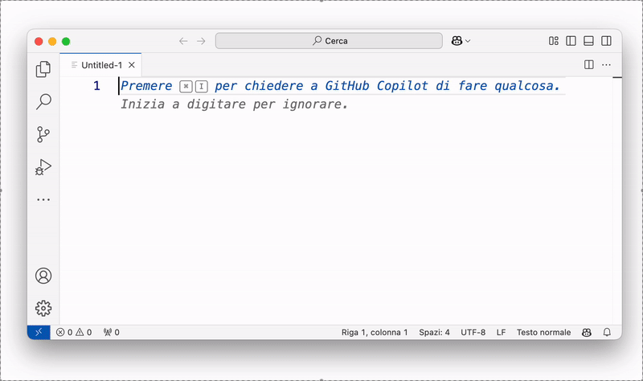
- L’IA suggerisce un completamento per il testo inserito
- e.g., codice, testo, URL
- L’utente accetta (anche in parte) o ignora il suggerimento
- Usato anche e soprattutto per codice di programmazione
Attenzione…
- … modello di costo ad abbonamento (vedi qui)
- … potenziali leak di informazioni sensibili
- … rischio di lock-in non trascurabile
Interfaccia programmatica
import asyncio
from openai import AsyncOpenAI
client = AsyncOpenAI(api_key="sk-1234567890abcdef1234567890abcdef")
async def main():
stream = await client.chat.completions.create(
model="gpt-4",
messages=[
dict(role="user",
content="European countries, one by line")
],
stream=True,
)
async for chunk in stream:
print(chunk.choices[0].delta.content or "", end=", ")
asyncio.run(main())
Output:
Albania, Andorra, Austria, Belarus, Belgium, Bosnia and Herzegovina, Bulgaria, Croatia, Cyprus, Czech Republic, Denmark, Estonia, Finland, France, Germany, Greece, Hungary, Iceland, Ireland, Italy, Kosovo, Latvia, Liechtenstein, Lithuania, Luxembourg, Malta, Moldova, Monaco, Montenegro, Netherlands, North Macedonia, Norway, Poland, Portugal, Romania, Russia, San Marino, Serbia, Slovakia, Slovenia, Spain, Sweden, Switzerland, Turkey, Ukraine, United Kingdom, Vatican City (Holy See),
-
Linguaggio di programmazione che interagisce con IA
- e.g., Python, JavaScript
-
L’interazione rimane di tipo richiesta-risposta
- il programma invia una richiesta, l’IA risponde
Abilitante per
-
Prompt parametrici, risposte processate automaticamente
- es.
list of LOCALITIES in AREA, one by line- dove
LOCALITIES$\in$ {cities,regions,states} - e
AREA$\in$ {Europe,Asia,Africa,America,Oceania} - risultati ordinati alfabeticamente
- dove
- es.
-
Scrittura software che usa l’IA come servizio
- utile in industria come in ricerca
Attenzione…
- … modello di costo a consumo (vedi qui)
- proporzionale al numero di token processati
- prezzi variabili per modello
Interfaccia in-app

-
GenAI integrata in applicazioni desktop o web
- e.g., Microsoft Office (Word, Excel, Outlook)
-
supporto per interfaccia conversazionale interna
- conversazione intrinsecamente contestualizzata
-
IA automatizza operazioni complesse (interne all’app)
- e.g., scrittura di bozze
- e.g., generazione di formule, grafici
Attenzione…
- … modello di costo ad abbonamento (vedi qui)
- … potenziali leak di informazioni sensibili
- … rischio di lock-in non trascurabile
Interfaccia per editing di audio-visivi (e.g. musica)
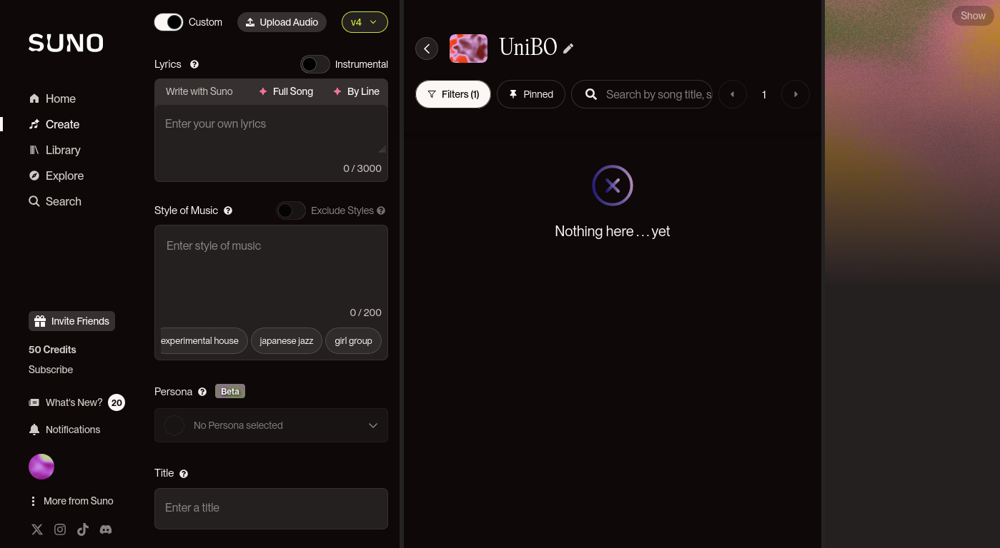
-
Interazione one-shot per generare il contenuto
- input: descrizione testuale del contenuto
- output: contenuto
-
L’interfaccia permette poi
- riproduzione del contenuto
- modifica del contenuto
- e.g., taglio di parti, modifica di tonalità
Esempio
Principali modalità d’utilizzo generali
Categorizzate per ruolo di GenAI
GenAI come…
- … motore di ricerca: uso GenAI per ricercare informazioni
- … assistente di (ri)scrittura: uso GenAI per (ri)scrivere documenti
- … assistente di lettura: uso GenAI per acquisire informazioni da documenti
- … assistente per l’elaborazione dei dati: uso GenAI per elaborare dati
- … generatore di contenuti: uso GenAI per creare contenuti
Lista non esaustiva!
Principali impieghi di GenAI in ambito educativo
L’utilizzo di strumenti AI varia a seconda del ruolo accademico considerato.
Docenti
- Progettazione curricula, sillabi, struttura delle lezioni, etc.
- Supporto alla creazione di contenuti didattici
- Supporto alla valutazione e al feedback per gli studenti
- Supporto alle attività amministrative
- Creazione di tutori AI personalizzati per gli studenti
Studenti
- Produzione di contenuti per lo studio o elaborati
- Ricerca e sintesi di informazioni da fonti varie
- Tutoraggio personalizzato e pratica
- Arricchimento del materiale di studio
GenAI in ambito educativo: Docenti
GenAI in ambito educativo: Docenti
Progettazione di contenuti didattici (Overview)
GenAI utile per delineare i vari aspetti di un percorso didattico, tra cui:
- Definizione degli obiettivi di apprendimento
- Strutturazione di un sillabo coerente e completo
- Suggerimenti su contenuti e risorse da includere come approfondimento
- Suggerimenti su compiti o proposte di progetto per gli studenti
- Definizione di una metodologia di valutazione basata su criteri chiari
GenAI in ambito educativo: Docenti
Progettazione di contenuti didattici (Pattern di prompt utili)
-
Progettail sillabo per un corso su X- assume che
Xsia un argomento ben definito
- assume che
-
Suggerisciuna diversa struttura per questa dispensa affinché sia più incrementale- [allegando la dispensa]
- approccio incrementale spesso più efficace
-
Strutturauna presentazione per una lezione su questo capitolo del libro X- [allegando il capitolo/libro]
GenAI in ambito educativo: Docenti
Progettazione di contenuti didattici (Esempio)
Struttura una lezione su canto V della Divina Commedia, livello liceo scientifico.- caricando il testo del canto, e la pagina Wikipedia corrispondente
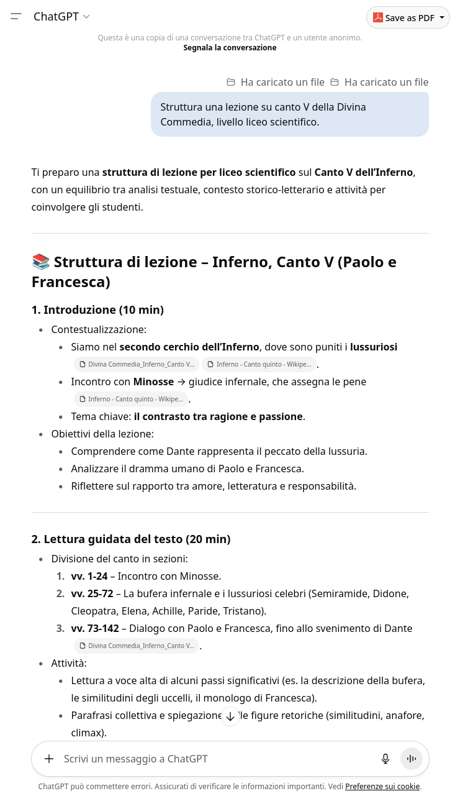
[conversazione completa: https://chatgpt.com/share/68c986ed-ab5c-8008-ace0-26f3c6edccc8]
GenAI in ambito educativo: Docenti
Progettazione di contenuti didattici (Note)
-
Meglio seguire un approccio gerarchico:
- prima la struttura generale delle lezioni
- poi la struttura di ogni lezione
- poi la struttura di ogni slide
- …
- poi la struttura di ogni slide
- poi la struttura di ogni lezione
- prima la struttura generale delle lezioni
-
Sempre meglio partire da materiale pre-esistente e allegarlo al prompt
- attenzione ai diritti d’autore
-
Fornire suggerimenti sugli aspetti salienti da considerare nel prompt
GenAI in ambito educativo: Docenti
Supporto alla creazione di contenuti didattici (Overview)
GenAI utile per generare effettivamente i contenuti didattici, tra cui:
- Slides / presentazioni
- Dispense / materiale da studiare
- Casi di studio / esempi
- Esercizi / quiz / test di vario tipo
GenAI in ambito educativo: Docenti
Supporto alla creazione di contenuti didattici (Pattern di prompt utili)
-
Generail sillabo per un corso su X- assume che
Xsia un argomento ben definito
- assume che
-
Riscriviquesta dispensa affinché sia più incrementale- [allegando la dispensa]
- approccio incrementale spesso più efficace
-
Generauna presentazione per una lezione su questo capitolo del libro X- [allegando il capitolo/libro]
GenAI in ambito educativo: Docenti
Supporto alla creazione di contenuti didattici (Esempio)
Genera le slide di una lezione su canto V della Divina Commedia, livello liceo scientifico- caricando il testo del canto, e la pagina Wikipedia corrispondente
- magari avendo fornito la struttura generale nelle interazioni precedenti
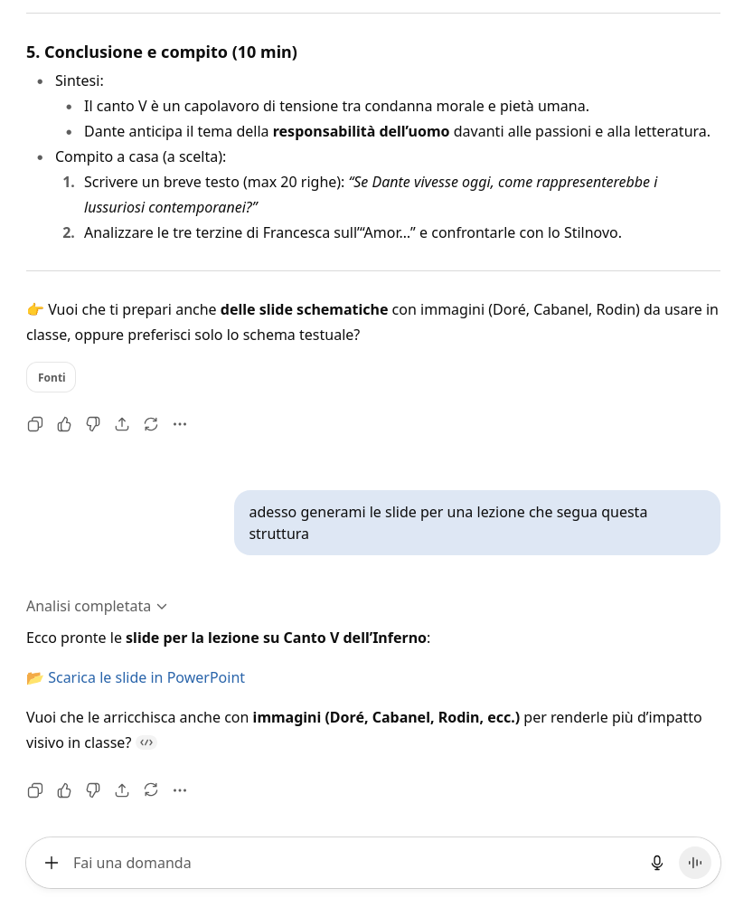
[slide generate visibili qui][conversazione completa: https://chatgpt.com/share/68c986ed-ab5c-8008-ace0-26f3c6edccc8]
GenAI in ambito educativo: Docenti
Supporto alla creazione di contenuti didattici (Note)
-
Meglio progettare la scaletta prima di chiedere la generazione del contenuto
- i.e. flusso logico delle slide
-
Meglio fornire materiale pre-esistente e allegarlo al prompt
- attenzione ai diritti d’autore
-
Meglio richiedere la generazione di elementi singoli (es. slide) uno alla volta
- e.g.,
Genera la slide 1,Genera la slide 2, etc.
- e.g.,
GenAI in ambito accademico: Docenti
Supporto alla valutazione degli studenti (Overview)
- Valutazione semi-automatica delle risposte degli studenti
- Feedback personalizzato basato sulle risposte degli studenti nei quiz o compiti
- Identificazione di aree di miglioramento/approfondimento
GenAI in ambito accademico: Docenti
Supporto alla valutazione degli studenti (Pattern di prompt utili)
-
Valutala risposta X data alla domanda Y secondo questi criteri di valutazione: ...Tipo Descrizione Peso / Valore Informazioni attese informazione $1$ $p_1$ informazione $2$ $p_2$ informazione $N$ $p_N$ Errori tipici errore tipico $1$ $-e_1$ errore tipico $2$ $-e_2$ errore tipico $M$ $-e_M$ Fattori bonus/malus fattore $1$ (bonus) $+b_1$ fattore $2$ (malus) $-b_2$ fattore $K$ (malus) $-b_K$ -
... calcola il punteggio totale e fornisci un feedback costruttivo- [opt]
interrompi il ragionamento e chiedimi come procedere se incontri elementi non coperti dalla griglia
- [opt]
GenAI in ambito accademico: Docenti
Supporto alla valutazione degli studenti (Pattern di prompt utili, cont.)
-
Riposta X alla domanda Y, segue opinione grezza, aiutami a dare un feedback costruttivo- Le opinioni grezze possono essere ad esempio:
- “La risposta è corretta ma manca di esempi pratici”
- “La spiegazione è chiara ma alcuni passaggi sono troppo sintetici”
- “L’argomento è ben coperto ma la struttura del testo è confusa in alcuni punti”
- Le opinioni grezze possono essere ad esempio:
-
Risposta X alla domanda Y, giudizio Z, suggerisci materiali di approfondimento per lo studente- fornire copia dei materiali didattici se si vuole che GenAI attinga da essi
GenAI in ambito accademico: Docenti
Supporto alla valutazione degli studenti (Esempio completo)
-
Domanda esempio:
“Nel Canto V dell’Inferno, Dante incontra Paolo e Francesca. Analizza come l’autore intreccia amore e colpa nella rappresentazione dei due personaggi, mettendo in evidenza gli strumenti poetici e retorici utilizzati per suscitare empatia nel lettore, e discuti in che modo questo episodio contribuisce alla visione dantesca della giustizia divina” -
Griglia di valutazione:
| Tipo | Descrizione | Peso / Valore |
|---|---|---|
| Informazioni attese | Contestualizzazione del canto V | 2 |
| Presentazione della pena dei lussuriosi (bufera infernale) | 2 | |
| Racconto di Paolo e Francesca: dinamica della vicenda | 2 | |
| Analisi dei temi amore/colpa/peccato ed empatia suscitata | 3 | |
| Collegamento alla visione della giustizia divina e al progetto etico-teologico di Dante | 3 | |
| Errori tipici | Riassunto meramente narrativo senza analisi | -2 |
| Confondere canto o collocazione nell’Inferno | -1 | |
| Fattori bonus/malus | Uso di citazioni testuali mirate (anche brevi) | +2 |
| Argomentazione poco coerente o priva di struttura | -2 | |
| Approfondimento critico originale (es. riflessione sul rapporto tra eros e logos) | +2 |
GenAI in ambito accademico: Docenti
Supporto alla valutazione degli studenti
- Risposta esempio buona (voto 26/30):
“Nel canto V Dante colloca i lussuriosi nel secondo cerchio, travolti dalla bufera che simboleggia la passione incontrollata. L’incontro con Paolo e Francesca, introdotto dal giudizio di Minosse, è narrato con forte pathos: Francesca parla per entrambi, presentando l’amore come forza inevitabile, alimentata dalla lettura (“Galeotto fu ’l libro”). Dante utilizza un registro lirico che suscita empatia, ma al tempo stesso mostra come la mancanza di responsabilità trasformi l’amore in colpa. Il canto esprime così la tensione tra pietà umana e giustizia divina.”
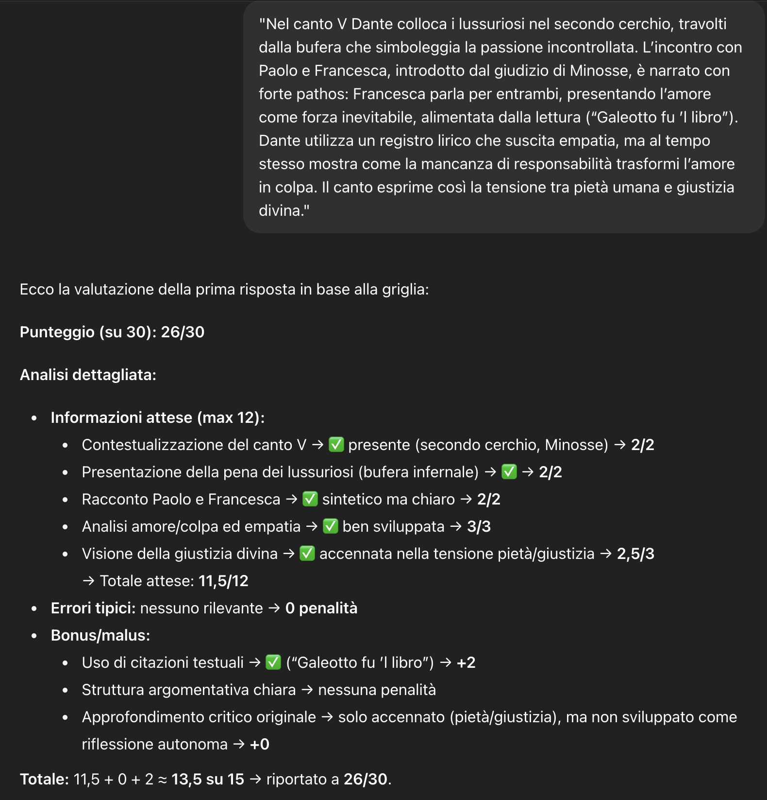
GenAI in ambito accademico: Docenti
Caso 4: Supporto attività amministrative (Overview)
- Generazione di comunicazioni generali/personalizzate con gli studenti (email, annunci, etc…)
- Creazione di documenti amministrativi standard (lettere, report, etc…)
- Analisi dei questionari della didattica per individuare aree di miglioramento
- Generazione timesheet o report di avanzamento per progetti di ricerca
GenAI in ambito accademico: Docenti
Caso 4: Supporto attività amministrative (Pattern di prompt utili)
-
Generauna lettera di benvenuto per i nuovi studenti iscritti al corso X- includendo informazioni su:
- struttura del corso
- modalità di valutazione
- risorse disponibili
- contatti utili
- includendo informazioni su:
-
Creauna lettera di raccomandazione per lo studente Y basata su queste informazioni: ...- Privacy-concerning: informazioni sullo studente (es. voti, progetti, etc…)
- interazioni passate tra il firmatario e lo studente
- informazioni sul destinatario (es. università, azienda, etc…)
-
Dato questo questionario di feedback degli studenti,generaun report sintetico con i punti chiave e suggerimenti per migliorare il corso- [allegando esiti del questionario e feedback dello studente]
-
Genera un timesheet mensile per il progetto P, considerando i seguenti vincoli:massimo 8 ore al giorno, dal lunedì al venerdìfaccio 3 ore di lezione il lunedì e 2 ore il mercoledì- Nota LLM non possono inferire il calendarario se non per mezzo di informazioni esplicite e/o tools
GenAI in ambito accademico: Docenti
Caso 5: Creazione di tutor AI personalizzati
Tutor AI $\approx$ Chatbot basato su LLM, istruito/informato su materiale specifico del corso/docente
È possibile creare tutor AI personalizzati per assistere gli studenti al di fuori delle ore di lezione in grado di
- Rispondere a domande frequenti sugli argomenti/logistica del corso
- Fornire spiegazioni aggiuntive su argomenti del corso
- Fornire supporto personalizzato in base alle esigenze individuali degli studenti
Doppia interfaccia:
- Studente $\rightarrow$ interfaccia conversazionale (chat)
- Docente $\rightarrow$ interfaccia semplificata per caricare materiali/istruzioni di riferimento
GenAI in ambito accademico: Docenti
Caso 5: Creazione di tutor AI personalizzati
-
Esistono varie piattaforme che permettono di creare facilmente dei bot personalizzati basati su LLM
-
Esempio: SchoolAI
- Si crea uno “spazio di lavoro”, inserendo il nome del corso e una breve descrizione
- Si caricano i materiali di riferimento (dispense, slide, link a pagine web, etc…)
- Eventualmente vengono fornite altre informazioni utili (preferenze del docente, orari, convenzioni, etc)
-
Una volta creato lo spazio di lavoro, si può iniziare a chattare con il bot, che risponderà in base al materiale caricato
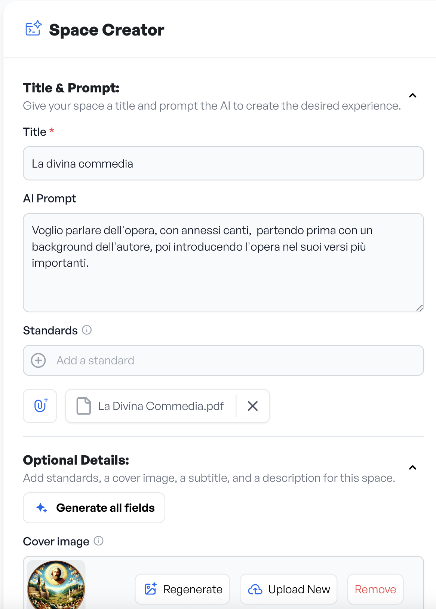
Setup dello spazio di lavoro
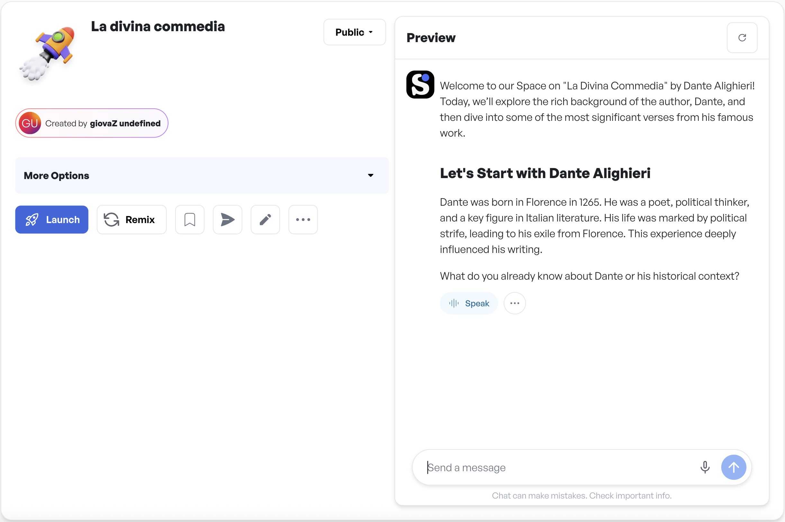
Chat con il tutor AI
GenAI in ambito educativo: Studenti
GenAI in ambito accademico: Studenti
Caso 1: Produzione di contenuti (Overview)
- Creazione di appunti di studio sintetici e organizzati
- Generazione di bozze per progetti o relazioni
- Creazione di presentazioni per progetti accademici
- Validazione di contenuti (e.g., controllo grammaticale, coerenza, etc…)
GenAI in ambito accademico: Studenti
Caso 1: Produzione di contenuti (Pattern di prompt utili)
-
Integraquesti due appunti di lezione in un unico documento coerente e ben strutturato- [allegando i due appunti]
- opzionalmente:
Evidenzia le parti ridondanti o contraddittorie - opzionalmente:
Aggiungi un sommario all'inizio
-
Data questa scaletta, generami una bozza per questo capitolo di tesi- [allegando la scaletta + riferimenti bibliografici]
- si può anche chiedere di mantenere uno stile specifico (formale, informale, tecnico, etc…)
-
Dato il documento caricato,trova errori,incongruenze,punti di attaccoesuggerimentiper migliorarlo- [allegando la bozza]
GenAI in ambito accademico: Studenti
Caso 1: Produzione di contenuti (Esempio)
Genera una parafrasi puntuale del canto, riga per riga- [allegando il testo del canto]
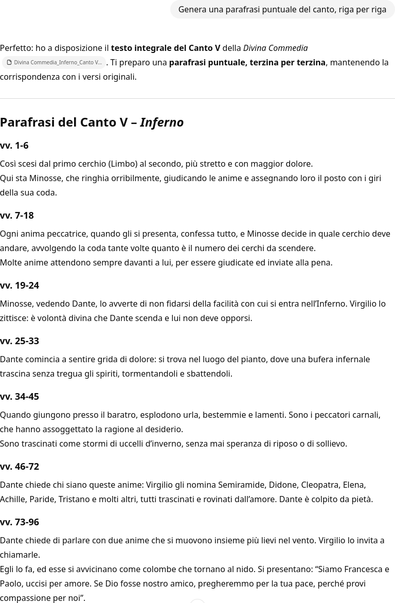
GenAI in ambito accademico: Studenti
Caso 1: Produzione di contenuti (Note)
-
La produzione di contenuti permette di avere una base di partenza su cui lavorare
- utile per la prima stesura, non per l’ultima
- si genera una bozza, poi la si rielabora e migliora.
-
Nella produzione di contenuti con GenAI è importante:
- fare attenzione diritti d’autore e plagio anche accidentale
- verificare sempre l’accuratezza e la correttezza delle informazioni generate
-
È importante specificare chiaramente il contesto, gli obiettivi, e background nel prompt
- è possibile fornire queste informazioni man man che si corregge il tiro
GenAI in ambito accademico: Studenti
Caso 2: Comprensione (Overview)
- Spiegazioni semplificate di concetti complessi
- Risposte a domande specifiche su argomenti di studio
- Suggerimenti per ulteriori letture o risorse di apprendimento
- Esempi pratici per illustrare concetti teorici (codice, esercizi matematici, etc…)
- Confronti tra concetti simili per chiarirne le differenze
GenAI in ambito accademico: Studenti
Caso 2: Comprensione
-
Spiegami in termini semplici il concetto di X- [fornendo magari materiale didattico]
-
Nel documento allegato cosa si intender per A?- [allegando il documento]
- opzionalmente:
Spiegami con un esempio pratico
-
Quali sono le differenze principali tra i concetti A e B?- Specifica sempre un contesto per i concetti A e B.
- Ad esempio, “In ambito matematico, quali sono le differenze tra funzione e relazione?”
GenAI in ambito accademico: Studenti
Caso 2: Comprensione
All'interno del canto V della Divina Commedia, cosa rappresenta la bufera infernale?- Risposta generata: “La bufera infernale simboleggia la passione amorosa incontrollata dei lussuriosi, che in vita li trascinò senza misura e che ora li tormenta eternamente nel contrappasso.”
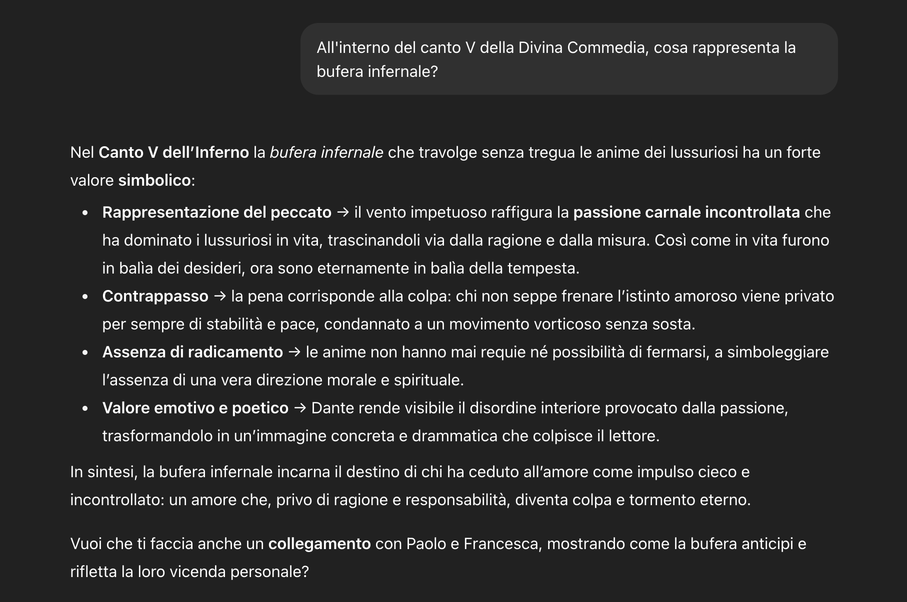
GenAI in ambito accademico: Studenti
Caso 3: Arricchimento materiale prodotto
- Correzione grammaticale e stilistica di testi
- Parafrasi o riformulazione di contenuti per maggiore chiarezza
- Suggerimenti per migliorare la struttura o l’organizzazione del materiale
- Strutturazione/analisi di codice per progetti di programmazione
- Generazione di grafici o diagrammi per visualizzare dati o concetti
GenAI in ambito accademico: Studenti
Caso 3: Arricchimento materiale prodotto
-
Cerca errori o incongruenze nel testo allegato- [allegando la documento]
-
Trascrivi questa traccia audio- [allegando la traccia audio]
-
Traduci questo testo in X- [allegando il testo e specificando la lingua X].
- opzionalmente è possibile anche chiedere una traduzione con un certo stile (formale, informale, tecnico, etc…).
-
Fai il riassunto di questo video- [allegando il video]
GenAI in ambito accademico: Studenti
Caso 3: Arricchimento materiale prodotto
Traduci il testo del canto in inglese cercando di avere anche lì uno stile arcaico ed uno schema metrico
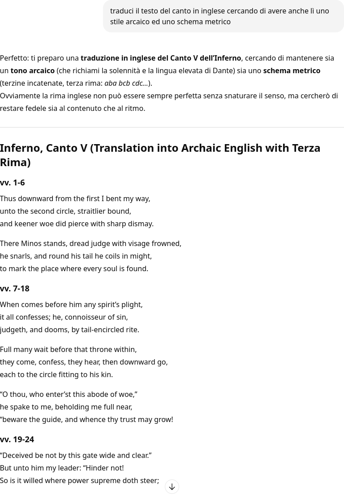
GenAI in ambito accademico: Studenti
Caso 3: Arricchimento materiale prodotto
-
Nel caso della sbobinatura, è sempre importante controllare l’esattezza del testo generato
- spesso vengono commessi errori di trascrizione, specialmente con nomi propri o termini tecnici.
- è sempre bene rileggere e correggere il testo sbobinato
-
Nel caso della traduzione, è importante considerare il contesto e il pubblico a cui è destinato il testo tradotto
- è consigliabile fornire indicazioni chiare sullo stile e sul tono desiderati
- è sempre bene rileggere e validare la traduzione generata
-
Facile incorrere in problematiche relative a problemi di plagio o diritti d’autore
- la traduzione è ‘inventata’ da GenAI o è una traduzione esistente?
- avevi il diritto di usare le registrazioni? e di condividerle col provider di GenAI?
GenAI in ambito accademico: Studenti
Caso 4: Brainstorming
- Strumenti AI possono essere affiancati agli studenti a supporto del processo creativo:
- Idee per progetti o ricerche
- Refactoring di codice
- Cercare soluzioni alternative a problemi complessi
- Suggerimenti per migliorare l’efficacia di presentazioni o discorsi
GenAI in ambito accademico: Studenti
Caso 4: Brainstorming
-
Quali sono i punti chiave di queste slide/appunti/capitolo?- [allegando il materiale]
-
Fornisci un elenco di problemi aperti su argomento X- [specificando l’argomento X]
-
Suggerisci idee per un progetto su X- [specificando l’argomento X, e la natura del progetto]
-
Data questa tesi/articolo, suggerisci 5 idee per estenderla- [allegando la tesi/articolo]
GenAI in ambito accademico: Studenti
Caso 4: Brainstorming
Voglio fare una tesina dove metto in relazione l'inferno dantesco alla cultura musulmana, suggerisci idee
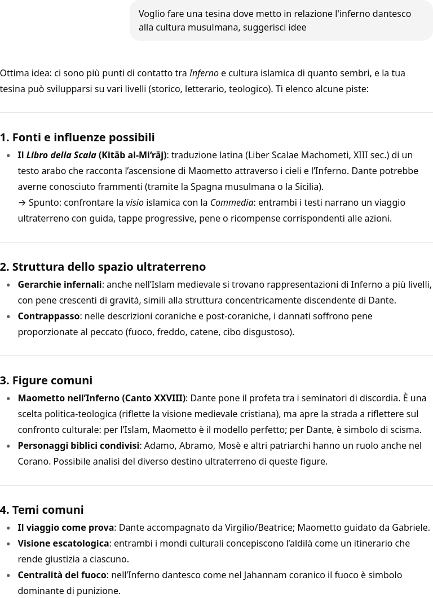
Esempi di tecnologie GenAI per l’educazione
Esempi di tecnologie GenAI per l’educazione
- Esistono vari strumenti basati su GenAI che supportano i casi d’uso discussi
- Segue panoramica delle soluzioni più comuni e interessanti
- Alcuni di questi forniti con una modalità gratuita mentre altri richiedono un abbonamento o pagamento per funzionalità avanzate
- pagamento spesso necessario per usabilità pratica
Esempi di tecnologie GenAI: Chat Testuali
-
- Stato dell’arte per modelli e interfaccia conversazionale
- supporto ai progetti: gruppi di chat con istruzioni/file condivisi
- supporto ai GPT*: chat-bot personalizzati (da terze parti) con funzionalità/informazioni specifiche
- modalità studia e impara (per discenti)*: esercizi, quiz, spiegazioni, etc…
-
Nella versione a pagamento
- meno limiti di utilizzo*, più scelta di modelli aggiornati
- es. numero di messaggi, upload di file, etc.
- modalità agente: possibilità per ChatBot di interfacciarsi ad altre applicazioni e servizi
- meno limiti di utilizzo*, più scelta di modelli aggiornati
* funzionalità impattanti per l’educazione
Esempi di tecnologie GenAI: Chat Testuali
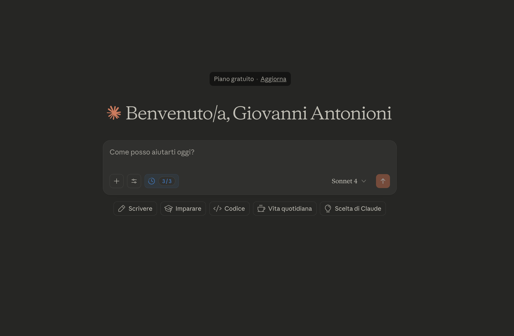
- Claude
- importante competitor di ChatGPT
- supporto ai progetti: gruppi di chat con istruzioni/file condivisi
- supporto gli artefatti: chat-bot personalizzati (da terze parti) con funzionalità/informazioni specifiche
- Nella versione a pagamento
- meno limiti di utilizzo, più scelta di modelli aggiornati
- es. numero di messaggi, upload di file, etc.
- possibilità di definire connettori: possibilità per ChatBot di interfacciarsi ad altre applicazioni e servizi
- meno limiti di utilizzo, più scelta di modelli aggiornati
Esempi di tecnologie GenAI: Chat Testuali
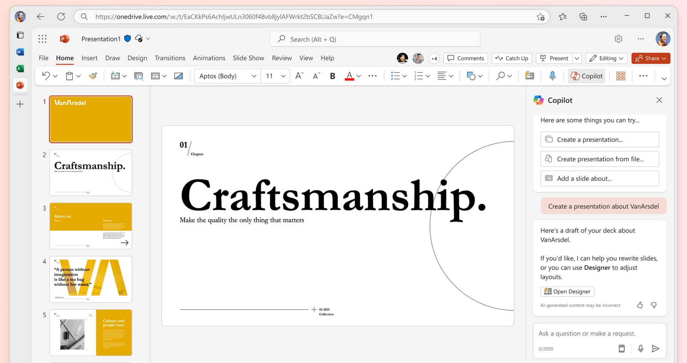
- Microsoft Copilot
- interfaccia conversazionale + in-app integrata in prodotti Office 365 (Word, Excel, PowerPoint, etc.)
- aiuta a generare contenuti dentro l’app, o automatizzare compiti ripetitivi
- utile per la generazione di slide (PowerPoint), documenti (Word) e analisi dati (Excel)
Esempi di tecnologie GenAI: Assistenti per la scrittura
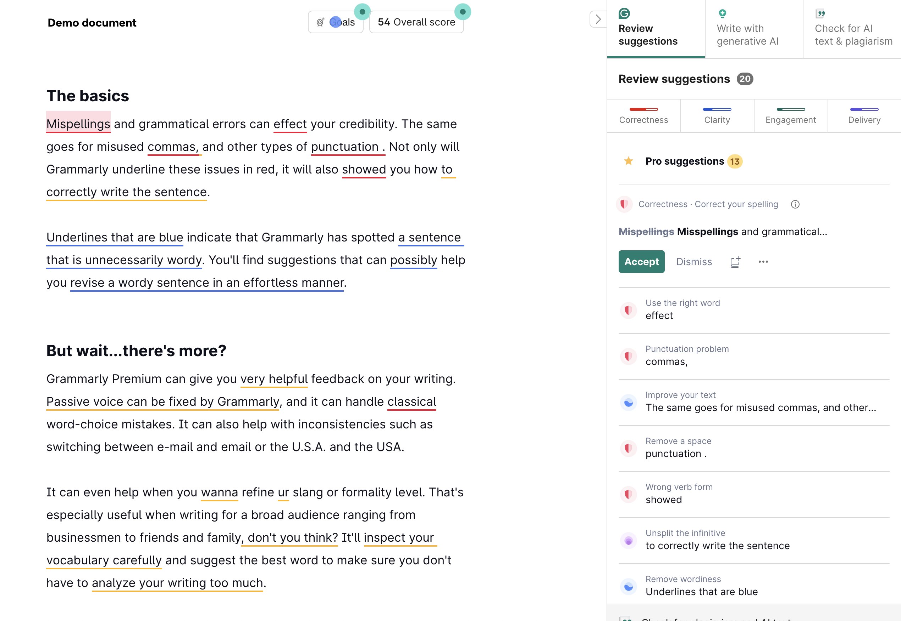
-
Grammarly - Assistente di scrittura AI:
- aiuta a migliorare la grammatica, lo stile e la chiarezza dei testi.
- utile soprattutto per la scrittura in lingua
-
Integrazione con browser o editor di testo
-
Controlli più fini sono possibili solo con la versione premium
-
Competitor gratuito: LanguageTool
Esempi di tecnologie GenAI: Assistenti per la scrittura
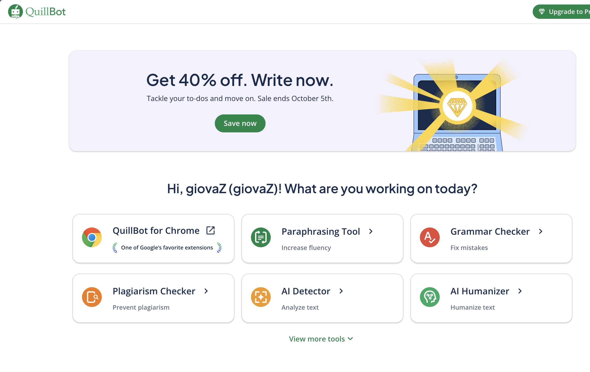
-
- correzione grammaticale
- detettore di plagio o generazione*
- traduzione
- gestore di voci bibliografiche
- sintetizzatore di testi
-
Interfaccia 1-size-fits-all per comuni operazioni di scrittura
* dubbi su accuratezza
Esempi di tecnologie GenAI: Piattaforme Educative
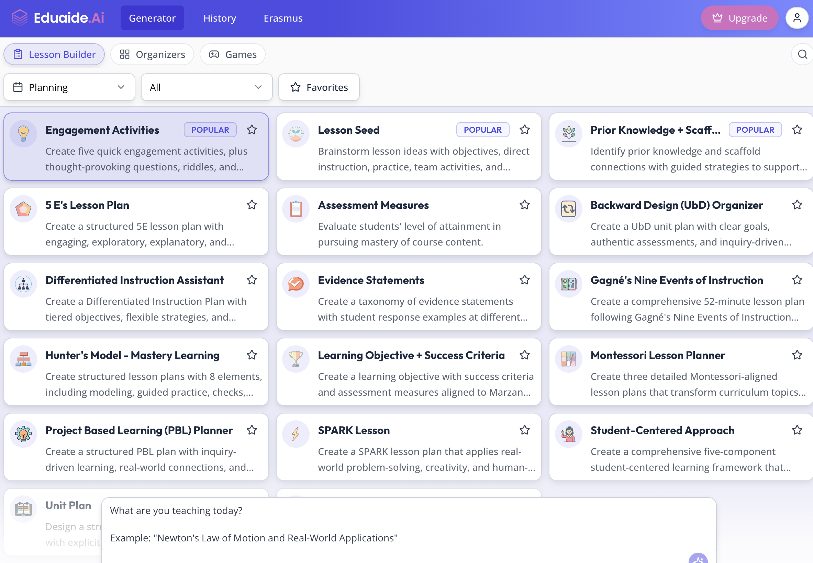
-
- costruzione semi-automatica di strumenti didattici interattivi
- focus su ordini di scuola primaria e secondaria, solo in inglese
-
Sistema GenAI-based per la didattica:
- pianificazione e impostazione delle lezioni
- creazione esercizi e attività pratiche, anche di gruppo
- creazione quiz e test di valutazione
- feedback personalizzato per studenti
-
Soluzione omni-comprensiva per docenti
- versione premium senza limiti di utilizzo + ChatBot d’aula
-
Molte funzionalità, difficile valutare efficacia
- bisogna comunque fornire materiale/indicazioni di partenza
Esempi di tecnologie GenAI: Piattaforme Educative
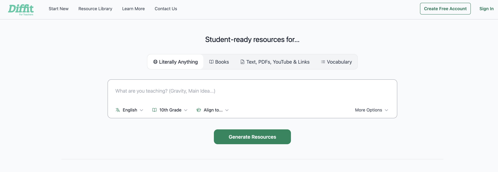
- Diffit
- generazione di materiali didattici…
- … a partire da libreria di risorse (premium)
Esempi di tecnologie GenAI: Piattaforme Educative
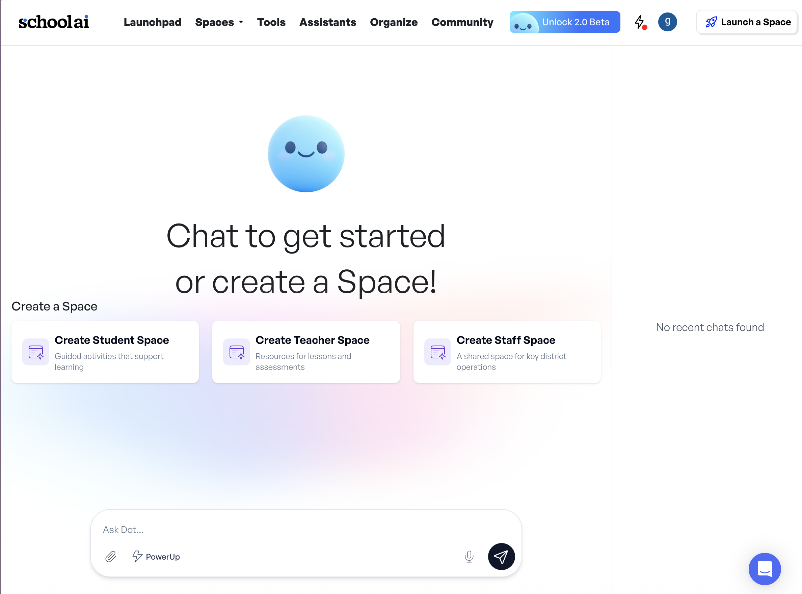
-
SchoolAI - GenAI per insegnanti e studenti
- tutor AI personalizzati (sul corso) che:
- guidano lo studente
- si adattano al suo stile di apprendimento
- strumenti per monitorare i progressi degli studenti…
- … e adattare le lezioni di conseguenza
- tutor AI personalizzati (sul corso) che:
-
Supporta “spazi di lavoro” personalizzati (per corso)
- controllo dei diritti/livelli d’accesso (docenti/studenti)
- condivisione di materiali e risorse all’interno dello spazio
Esempi di tecnologie GenAI: Piattaforme Educative
Note su SchoolAI
Non è chiaro…
- cosa significhi “guidare” lo studente
- cosa significhi “adattarsi” al suo stile di apprendimento
- cosa significhi “monitorare i progressi”
- quali informazioni il chat-bot catturi e usi per guidare/adattarsi
- e quali informazioni la piattaforma conservi sugli studenti
- quanto bene funzionino i chat-bot in situazione di cold-start
- nuova classe, nuovo studente, nuovo corso, etc…
- come facciano i tutor AI a mantenere l’engagement degli studenti
- considerato che i chat-bot basati su LLM sono reattivi
Esempi di tecnologie GenAI: Valutazione e Feedback
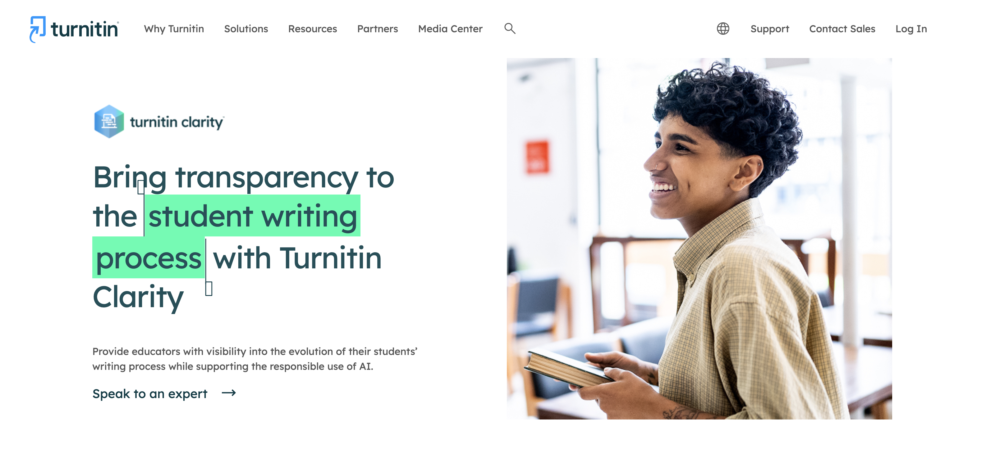
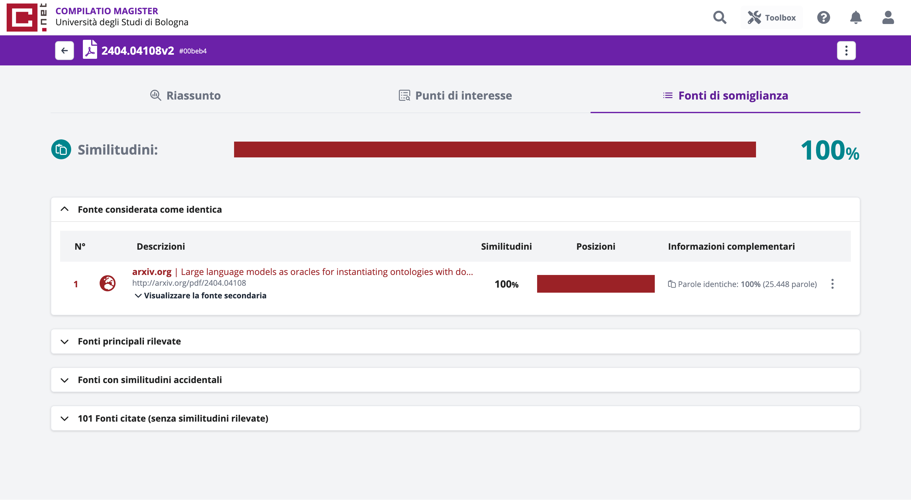
-
Strumenti di rilevamento del plagio:
-
Tanto più efficaci quanto più ampia la loro biblioteca di testi di riferimento
- importante che questa possa essere costantemente aggiornata, ampia
-
Possibile integrazione con piattaforme LMS (Moodle, Canvas, etc…)
- es. per controllare i compiti/esami caricati dagli studenti
-
I sistemi professionali sono costosi
- meglio appoggiarsi a licenza istituzionale se disponibile
-
Diffidare delle funzionalità di GenAI-detection
Esempi di tecnologie GenAI: Valutazione e Feedback
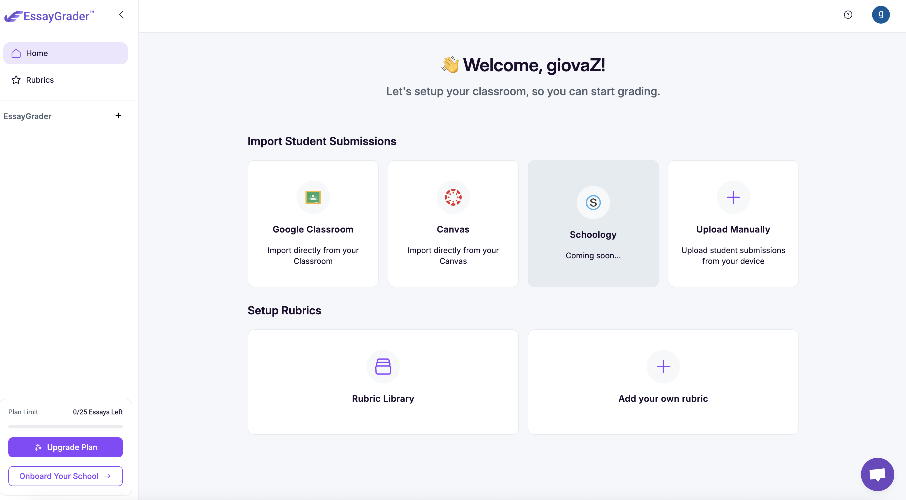
-
- valutazione automatica di saggi
- previo inserimento di griglia di valutazione (“rubric”) da parte del docente
- valuta aspetti come grammatica, coerenza, struttura
-
Funzionalità premium:
- integrazione con piattaforme LMS come Canvas e Google Classroom
- ridotto limite di saggi valutabili al mese
- analisi della performance a livello di classe o studente
- detection di testo generato
Sfide e criticità dell’applicazione di GenAI all’educazione
Sfide e criticità dell’applicazione di GenAI all’educazione
- Possibili impatti negativi sull’apprendimento
- es. mancato sviluppo di competenze, eccessiva dipendenza dagli strumenti
- Questioni etiche, legali e di privacy
- es. è giusto usage GenAI per correzioni e valutazioni?
- es. problemi legati al diritto d’autore nell’uso di materiali protetti come input
- es. plagio accidentale o volontario
- es. data leak di informazioni sensibili
- Facilità di abuso degli strumenti AI da parte di studenti
- es. frode nello svolgimento di compiti, esami, etc.
Potenziali abusi degli strumenti GenAI
Un controllo diretto su come gli studenti utilizzano GenAI è spesso impraticabile
- è possibile che gli studenti abusino degli strumenti generativi
- è difficile, per i docenti, verificare le competenze reali degli studenti
Al tempo stesso
- È impratico vietare completamente l’uso di GenAI
- È importante educare all’uso corretto e responsabile degli strumenti AI
Prevenire abusi degli strumenti GenAI (pt. 1)
Strumenti di rilevamento automatico
-
… della similarità tra elaborati (per evitare che gli studenti si copino a vicenda)
-
… del plagio (per evitare che gli studenti copino da fonti esterne)
- e.g., Compilatio
-
… di errori di grammatica e stile (per evitare che gli studenti presentino elaborati con errori banali)
- e.g., Grammarly
-
… di contenuti generati da AI (per evitare che gli studenti usino AI per generare i loro elaborati)
- e.g., GPTZero, OpenAI AI Text Classifier
Note
- Hanno una funzione di deterrenza
- Hanno margine d’errore, tanto maggiore quanto più complessa la rilevazione
- es. rilevazione di testi generati da AI è molto imprecisa
- $\rightarrow$ dicono dove guardare, non certificano problemi
Prevenire abusi degli strumenti GenAI (pt. 2)
Suggerimenti su strategie di verifica
-
Evitare compiti che possano essere svolti in toto con GenAI
- es. risposte multiple, calcoli di cui si debba riportare solo il risultato, etc.
-
Considerare modalità di verifica in cui l’impiego di GenAI è poco pratico
- es. esami orali, scritti su carta, etc.
-
Tenere la verifica in ambienti controllati dove l’accesso alla rete sia limitato
- es. nei laboratori del DISI è prassi limitare i siti Web accessibili durante gli esami al solo eol.unibo.it
-
Progettare compiti che richiedano competenze specifiche difficilmente replicabili con GenAI…
- es. analisi critica, riflessioni personali, applicazioni pratiche, etc.
-
… da verificare con modalità orali o pratiche
- es. discussioni, presentazioni, progetti, etc.
Protezione dei dati e privacy
- Dati caricati su piattaforme AI possono essere utilizzati per addestrare modelli futuri
- Ciò può comportare rischi per la protezione dei dati, specialmente se i dati contengono informazioni sensibili o personali
- es. informazioni anagrafiche sugli studenti e le loro prestazioni accademiche
Fare attenzione livello di protezione dei dati offerto dagli strumenti GenAI adottati
- in assenza di informazioni chiare, meglio assumere il peggio e limitare l’uso di tali strumenti
- idem in caso di non-configurabilità delle impostazioni di privacy
Problemi di Bias, Disinformazione e Accuratezza
-
GenAI può generare informazioni incomplete, imprecise, sbagliate, o incoerenti
-
Occorre rivedere sempre il materiale generato, sia lato docenti che lato studenti
-
Per mitigare l’imprecisione, è utile fornire contesto e dettagli nei prompt, e allegare fonti di riferimento
- contesto $\approx$ chi sei, cosa stai facendo
- dettagli $\approx$ cosa ti serve, come lo vuoi
- fonti $\approx$ materiale di riferimento, esempi
-
Per mitigare l’incompletezza, è utile:
- sfruttare la generazione poco alla volta, gerarchicamente, e ricorsivamente
- es. prima i capitoli, poi le sezioni di ogni capitolo, poi i paragrafi di ogni sezione, etc.
- chiedere esplicitamente di includere certi aspetti
- es. fornendo una scaletta di cose da includere, esempi, etc.
- sfruttare la generazione poco alla volta, gerarchicamente, e ricorsivamente
Impatto sul Pensiero Critico e sull’Eccessiva Dipendenza
Ci sono preoccupazioni riguardo all’effetto su larga scala di una eccessiva dipendenza dagli strumenti di GenAI
- riduzione della capacità di ricerca indipendente
- diminuzione della capacità di analisi critica delle informazioni
- minore sviluppo di competenze di risoluzione dei problemi
Impatto sul Pensiero Critico e sull’Eccessiva Dipendenza
Consigli non richiesti (Opinionated)
-
Tener presente il bias cognitivo WYSIATI ("What You See Is All There Is", Kahneman 2011)
- si tende a fidarsi di ciò che GenAI fornisce, pensando che sia tutto ciò che c’è da sapere
- ma GenAI non è sempre esaustiva
- meglio assumere che non lo sia mai (aka: GenAI non è un motore di ricerca)
-
Importante educare certe competenze anche in assenza di GenAI (es. ricerca di informazioni in testo/tomo/rete)
- importante allenare queste competenze nei corsi di base (es. con compiti/esami che impediscano l’uso di GenAI)
- solo dopo, in corsi avanzati, istruire all’uso degli strumenti di GenAI per aumentare tali competenze (es. con compiti/esami che richiedano l’uso di GenAI)
- perché GenAI non è sempre accurata
- meglio potersi accorgere degli errori e poterne fare a meno quando sbaglia
- importante allenare queste competenze nei corsi di base (es. con compiti/esami che impediscano l’uso di GenAI)
-
Affinchè GenAI abbia un impatto positivo sull’apprendimento sarà importante un grande sforzo (ri-)organizzativo
- es. ripensare metodi di insegnamento, tipi di compiti e modalità di verifica
Sull’adozione di soluzioni GenAI in ambito educativo
In questo momento proliferano strumenti roboanti la cui efficacia ed usabilità pratica sono tutte da dimostrare
-
Non farsi abbindolare dal marketing:
- le soluzioni offrono molte funzionalità…
- la cui efficacia è vincolata
- alla qualità del materiale di partenza (fornito dall’utilizzatore)
- alla pazienza del docente di fornire istruzioni chiare e dettagliate
- alla motivazione degli studenti a fruire attivamente degli strumenti
-
Soluzioni special-purpose (es. Eduaide AI) non necessariamente offrono LLM migliori, rispetto a soluzioni general-purpose (es. ChatGPT)
- spesso il valore aggiunto sta nell’interoperabilità con altri strumenti (es. LMS, gestione classe, etc.)
- l’acquisto ha senso se c’è interoperabilità con sistemi pre-esistenti (es. Moodle)
- a volte il valore aggiunto sta nella UI che guida maggiormente l’utente
- spesso il valore aggiunto sta nell’interoperabilità con altri strumenti (es. LMS, gestione classe, etc.)
-
Rischio di lock-in con soluzioni proprietarie
- es. dipendenza da licenze, formati chiusi, vendor-specific features, etc.
- una volta che si sceglie un provider non è facile cambiare
- i vendor principali sono visibilmente in una fase di accumulo di utenti
- es. dipendenza da licenze, formati chiusi, vendor-specific features, etc.
Sperimentazioni in corso in UniBo
(DISCLAIMER: Seguono opinioni personali dello speaker)
AI-Assisted Programming
Sperimentazione di AI-assisted programming nel primo anno del corso di laurea triennale in Scienze Statistiche
- Obiettivo: supportare l’insegnamento dell’informatica tramite strumenti di IA generativa
- Esperienza ispirata al quadro metodologico di Porter e Zingaro (Manning Publications, 2024)
- Focus su aspetti cognitivi, metacognitivi e motivazionali dell’apprendimento della programmazione
- Integrazione di IA per:
- assistenza alla scrittura del codice
- analisi automatica delle soluzioni
- personalizzazione del feedback agli studenti
- Discussione di vantaggi e criticità emersi durante la sperimentazione
Commenti
- Nessuna criticità dal punto di vista delle policy
- Sarebbe forse critico se fosse un corso di base in un CdL di Informatica
Sperimentazioni di GenAI in Giurisprudenza (pt. 1)
Nel Dipartimento di Scienze Giuridiche (DSG) sono state integrate 4 modalità innovative di GenIA nella didattica:
- Analisi critica in aula delle risposte di ChatGPT su temi giuridici, per promuovere un uso consapevole
- Storytelling giuridico: trasformazione di casi tecnici in racconti narrativi tramite GenIA, per facilitare la comprensione
- Confronto tra pari sull’uso di GenIA nello studio del diritto
- Simulazioni di role-play con GenIA nel corso di negoziazione internazionale, per esplorare dinamiche di trattativa e asimmetrie informative
Commenti
- Nessuna criticità dal punto di vista delle policy
Sperimentazioni di GenAI in Giurisprudenza (pt. 2)
CdLM in Informatica Giuridica, Sperimentazione su LLM in task giuridiche
- Obiettivo: sperimentare LLM locali in task giuridiche
- Attività:
- Estrazione di definizioni normative e riferimenti giuridici
- Identificazione di elementi qualificanti (es. titolare trattamento dati)
- Generazione di definizioni giuridiche
- Metodologia didattica:
- Introduzione teorica + esercitazioni in piccoli gruppi
- Scelte tecniche su parametri (temperatura, top-k, top-p), system prompt, contesto.
- Output atteso: valutazione critica dei risultati, analisi dell’impatto delle scelte tecniche, riflessione etica.
Commenti
- Nessuna criticità dal punto di vista delle policy
- Attenzione alla generazione di definizioni giuridiche
Sperimentazioni di GenAI in Giurisprudenza (pt. 3)
CdLM in Informatica Giuridica, Sperimentazione su KNIME e ipotesi giuridiche
- Obiettivo: laboratorio su KNIME, strumento di coding visuale per data processing finalizzato alla verifica di un’ipotesi giuridica
- Attività:
- Presentazione e giustificazione del caso e dei dati
- Pulizia, elaborazione e commento dei dataset
- Esposizione metodologia + visualizzazione grafica
- Aspetti critici:
- Questioni giuridiche (es. privacy)
- Questioni etiche (es. bias di genere)
- Output atteso: valutazione dei risultati con strumenti di argomentazione e interpretazione giuridica.
Commenti
- Nessuna criticità dal punto di vista delle policy
Sperimentazioni di GenAI in Giurisprudenza (pt. 4)
Sperimentazione nel corso “Didattica del diritto” (CdL Giurisprudenza): progettare UDA con supporto generativo
- Utilizzo di GenAI per progettare Unità di Apprendimento (UDA) rivolte a studenti delle scuole superiori
- Attività di gruppo: generazione idee, strutturazione attività inclusive per BES, esplorazione metodologie innovative (flipped classroom, simulazioni di processo), connessioni interdisciplinari
- Obbligo di trasparenza sull’origine delle idee generate
- Presentazione finale dei progetti, riflessione sui limiti e valore dell’AI, feedback della docente
Commenti
- Nessuna criticità dal punto di vista delle policy
Laboratorio su Bias e GenAI: sceneggiature inclusive
CdL in Scienze della Comunicazione e DAMS:
- Sperimentazione didattica: uso critico di GenAI (ChatGPT, Bard) per scrivere sceneggiature originali
- Focus su progettazione di prompt e riconoscimento/discussione di bias (genere, etnia, abilismo, rappresentazione sociale) nei testi generati
- Approccio interdisciplinare: integrazione tra pedagogia e informatica per analisi critica delle sceneggiature
- Obiettivo: promuovere media education, pensiero critico e data literacy, riflettendo sui rischi dei pregiudizi sistemici nei dati di addestramento
Commenti
- Nessuna criticità dal punto di vista delle policy
Didattica delle lingue e GenAI
-
Attività 1 — Scrittura in L2 con feedback IA (inglese B2)
- Blog di classe; uso strategico del feedback di ChatGPT
- Focus progressivo: morfosintassi → lessico → stile
-
Attività 2 — Prompting per interazione orale (italiano L2)
- Sviluppo dell’arte del prompting per “conversare con la macchina”
- Obiettivo: pratica autonoma della produzione orale fuori aula
-
Attività 3 — Progettazione UDA con GenAI (formazione docenti)
- Uso di più strumenti GenAI per progettare unità didattiche
- Valutazione: UDA = 40% del voto finale; restante via colloquio orale
Commenti
- Nessuna criticità dal punto di vista delle policy per attività 1 e 2
- Attenzione all’attività 3: richiede analisi dell’efficacia di GenAI nella progettazione didattica
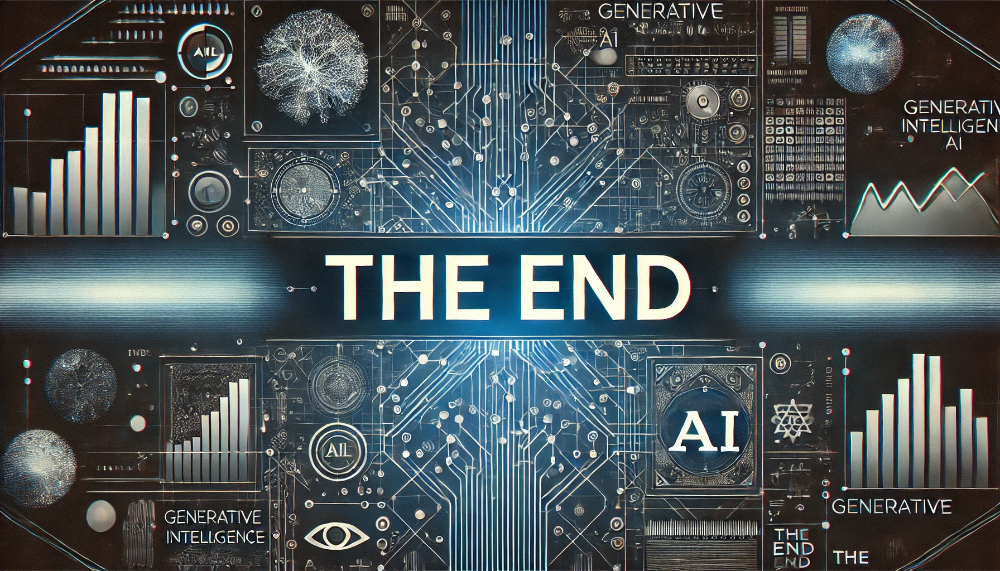